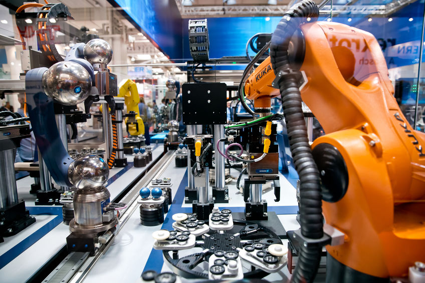

Misión del Programa

Misión del programa educativo
Formar profesionistas en la Ingeniería Mecatrónica con capacidad analítica, crítica e innovadora que le permita diseñar, proyectar, construir y administrar equipos y sistemas mecatrónicos en el sector social, productivo y de servicios; así como integrar, operar y mantener, con un compromiso ético y de calidad en un marco de desarrollo sustentable.
Program Educational Mission
To educate Mechatronics Engineers with analytical, critical and innovative skills to design, develop, build and manage mechatronic systems across social, industrial and service sectors, while integrating, operating and maintaining them with ethical standards and quality commitment within sustainable development principles.